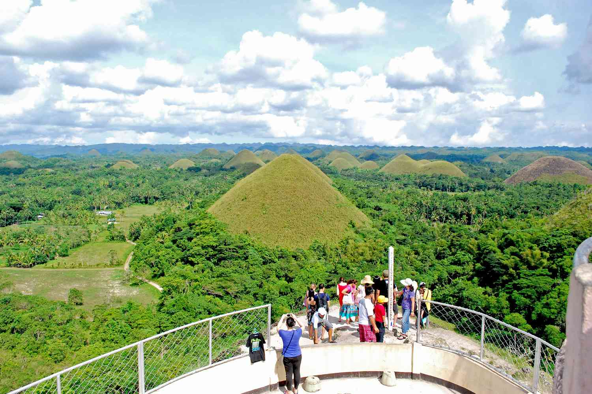
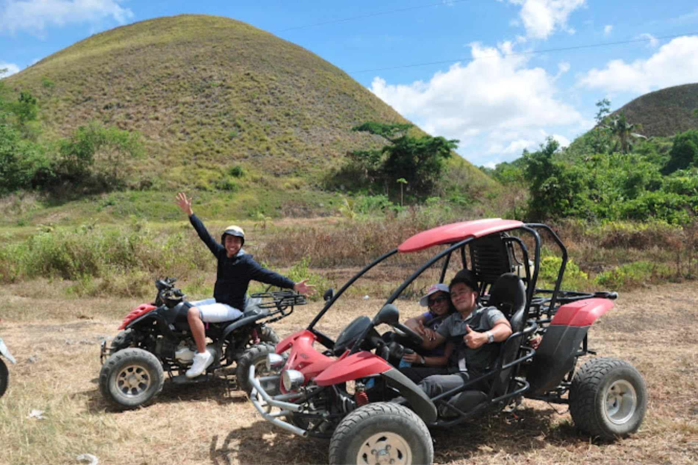
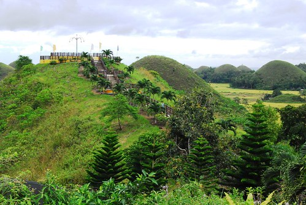

Activities Your Must Try

Viewing Deck Visit
Climb up to the Chocolate Hills Complex viewing deck for a panoramic view of the hills.

ATV or Buggy Ride
Ride an all-terrain vehicle or buggy around the hills for an exciting and up-close adventure.

Trekking and Biking
Explore trails surrounding the hills for a scenic nature walk or bike ride.

Visit Sagbayan Peak
Enjoy another viewing spot with additional attractions like a mini zoo and playground.